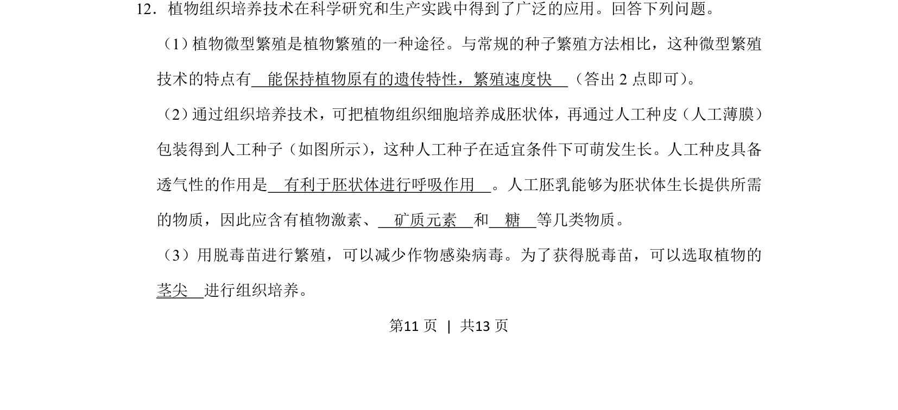
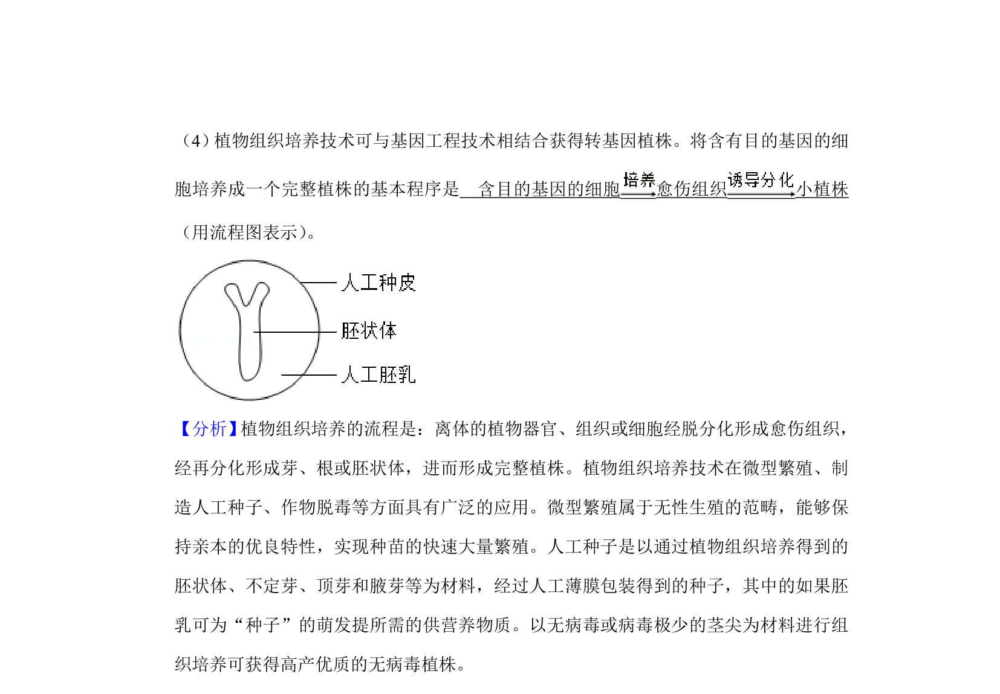
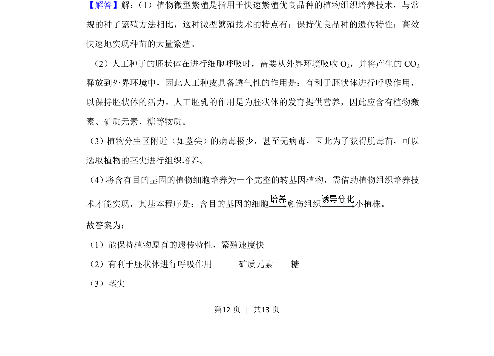
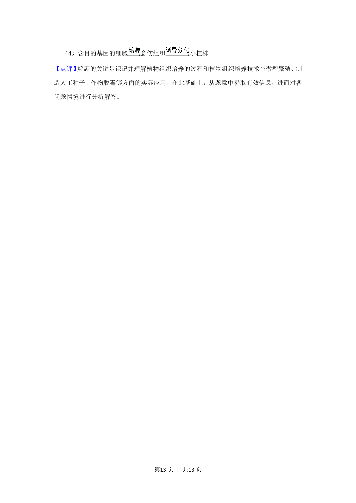

考点：植物组织培养 微型繁殖 人工种子 脱毒苗


考查植物组织培养的应用，包括微型繁殖特点、人工种子成分及脱毒苗取材。


📄 原 PDF 第 11 页：
素材/真题/吉林/2008-2024·（吉林）生物高考真题/2019年高考生物试卷（新课标Ⅱ）（解析卷）.pdf
12．植物组织培养技术在科学研究和生产实践中得到了广泛的应用。回答下列问题。 （1） 植物微型繁殖是植物繁殖的一种途径。与常规的种子繁殖方法相比，这种微型繁殖 技术的特点有 能保持植物原有的遗传特性，繁殖速度快 （答出2点即可） 。 （2） 通过组织培养技术，可把植物组织细胞培养成胚状体，再通过人工种皮（人工薄膜） 包装得到人工种子（如图所示） ，这种人工种子在适宜条件下可萌发生长。人工种皮具备 透气性的作用是 有利于胚状体进行呼吸作用 。人工胚乳能够为胚状体生长提供所需 的物质，因此应含有植物激素、 矿质元素 和 糖 等几类物质。 （3）用脱毒苗进行繁殖，可以减少作物感染病毒。为了获得脱毒苗，可以选取植物的 茎尖 进行组织培养。